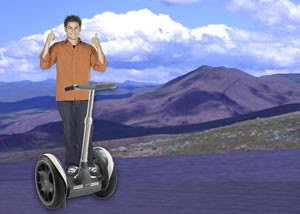

Documenting my trip around the USA on my very on segway

well i made it 1200miles already,and i passed through some intresting places on the way:
I saw some Burma shave style signe on the side of the road today:
passing cars,
when you can't see,
May get you,
A glimpse,
Of eternity.
I defnately won't be passing any cars.
My first day of the trip! I can't believe finally got everything packed and ready to go.Because i'm on my segway, i wasn't able to bring a whole lot with me:
A journey of thousand miles begins with one segway..